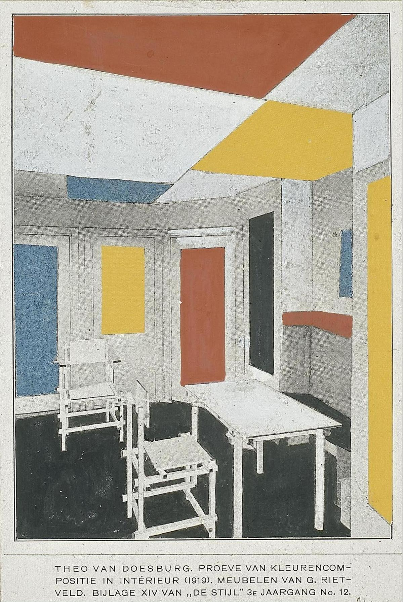
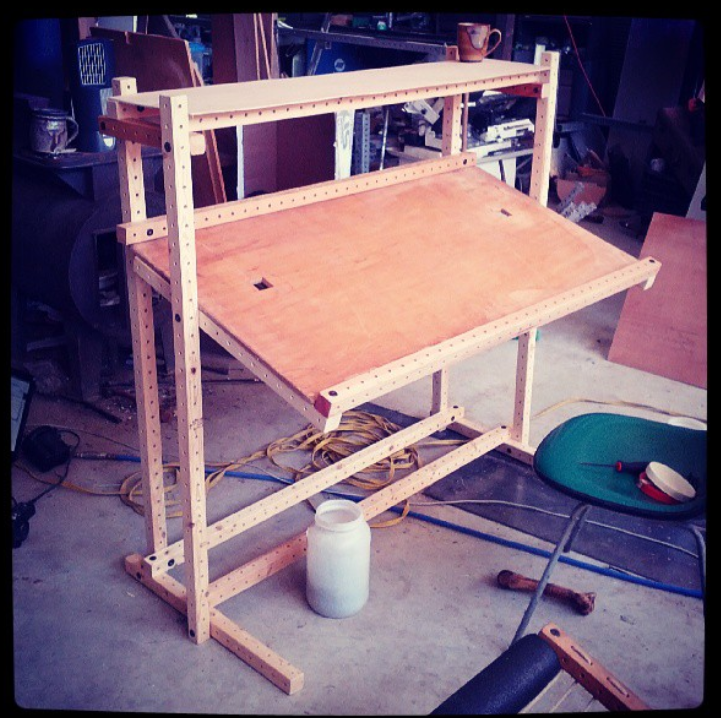
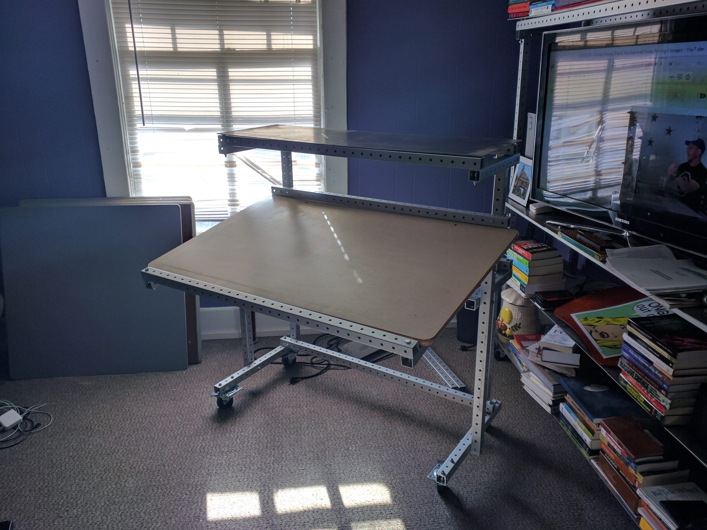
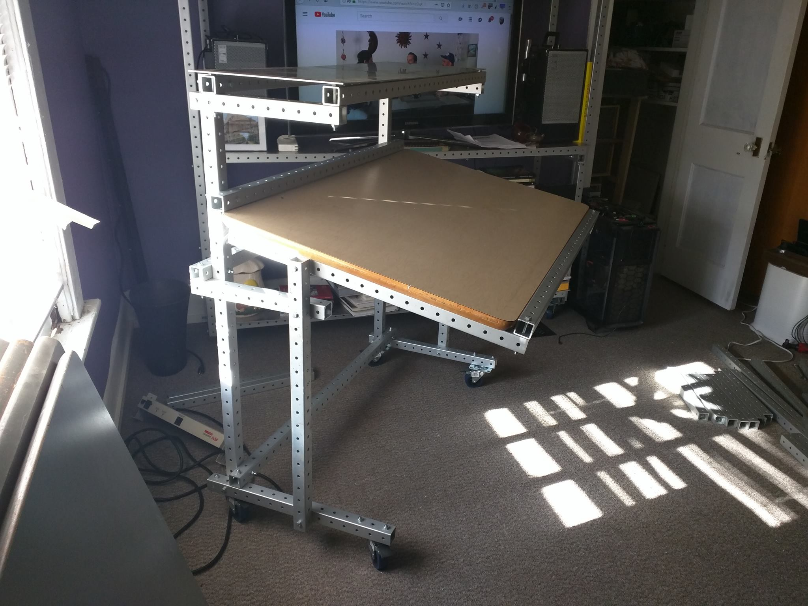
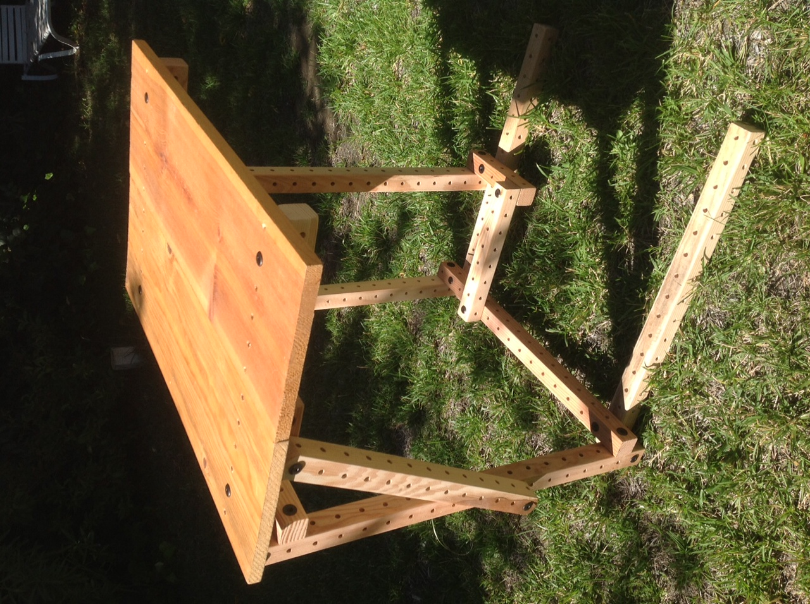
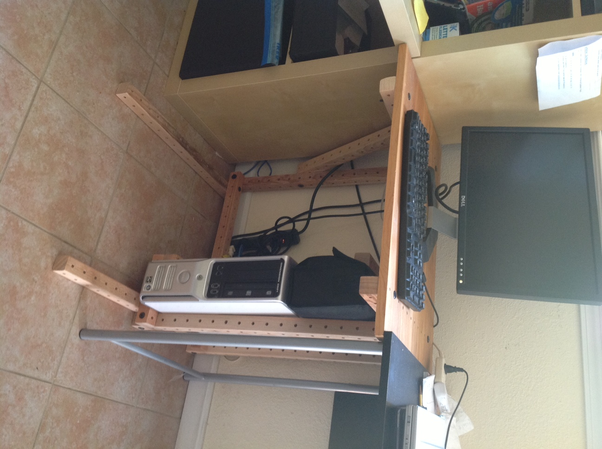
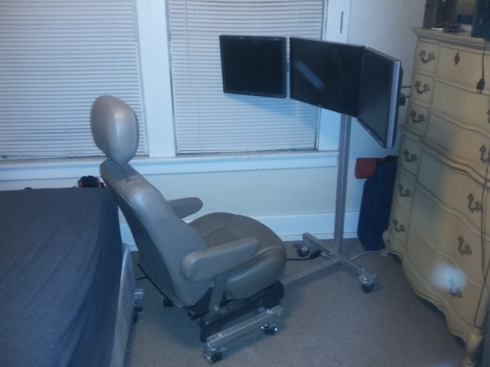
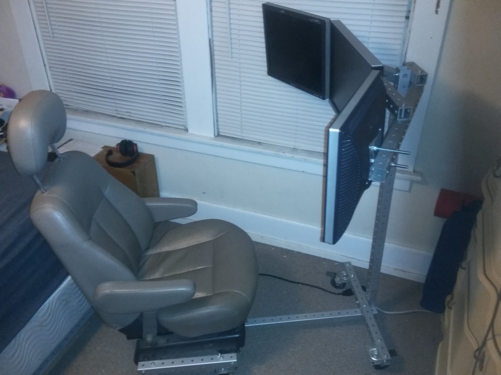

desks revision 7615
^ Projects infobox ^^
| image | Desk.scad.png |
| designers | RJ Jergenson |
| date | 2000 |
| vitamins | |
| materials | |
| transformations | |
| lifecycles | |
| tools | [[wrenches|Wrenches]] |
| parts | [[frames|Frames]], [[nuts|Nuts]], [[bolts|Bolts]], [[end_caps|End caps]], [[plates|Plates]] |
| techniques | [[tri_joints|Tri joints]], [[shelf_joints|Shelf joints]], [[cantilever_supports|Cantilever supports]] |
| git | |
| stl | |
Introduction
A desk or bureau is a piece of furniture with a flat table-style work surface used in a school, office, home or the like for academic, professional or domestic activities such as reading, writing, or using equipment such as a computer. Desks often have one or more drawers, compartments, or pigeonholes to store items such as office supplies and papers. Desks are usually made of wood or metal, although materials such as glass are sometimes seen.
Challenges
Approaches

<youtube>LM4CgXonxqw</youtube>

shelf joints" loading="lazy"> discovered by [[Joy Livingwell. I used Phil and RJ Jergenson's Gridbeam system, which favored frame lengths of 1ft, 2ft, 3ft, and so on. And allowed odd lengths. Consequently, the vertical beam has 32 holes. --User:Tim]]Adapter plates
- VESA mount
- ATX mount
Drafting table


Parts
Standing desk


Parts
Gaming desk

